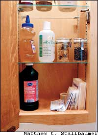
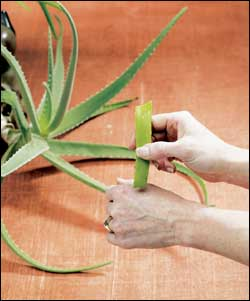
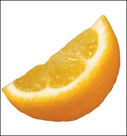

Issue # 208 - February/March 2005
An estimated 80 percent of minor injuries occur at home. While some cuts, burns and blisters require immediate medical attention, others can be effectively treated with simple first aid.
When stocking a first-aid kit to deal with these inevitable accidents, don’t overlook the many natural products that can speed healing and reduce the risk of infection. These include items you may already have on hand, such as vitamin C, aloe and honey.
To treat minor wounds, it’s helpful to understand how the body responds to injuries. The skin, which is the body’s largest organ, has two layers - the epidermis and the dermis. The epidermis is the thin layer (about five cells deep) that’s in direct contact with the environment; it is also host to millions of bacteria and other microorganisms. Ordinarily, these residents cause no problems, but that can change quickly when you suffer a minor wound that breaks the skin.
Beneath the epidermis is the dermis. When a wound tears the dermis, microorganisms from the epidermis invade and threaten infection, and the immune system works to close the breach and kill the germs. Blood vessels around the wound dilate, and extra blood rushes into the area, rinsing the wound and cleaning it. The extra blood also carries a small army of white blood cells that attack infection-causing microorganisms. This process causes inflammation - swelling, redness and pain around the wound. Cells injured by the wound die, but before they expire, they release a protein that triggers blood clotting, which eventually forms a scab that closes the wound.
After about 24 hours, other white blood cells release proteins that stimulate the repair of injured blood vessels and the creation of new skin cells and collagen. Sometimes the process is less than perfect, and collagen forms where you should have skin, resulting in a scar.
Wounds also can get infected - in this case pain and inflammation can persist or increase, and pus, made up of dead bacteria and white blood cells, may ooze from your scab. However, if all goes well, minor wounds should heal completely, and the simple remedies below can help speed that process.
No matter what kind of wound you have, taking vitamin C can help, whether you get it from fruit juice or from supplements. Low blood levels of vitamin C slow healing, while high levels speed formation of new skin cells and collagen, according to Dr. Melvyn Werbach, author of Nutritional Influences on Illness.
Studies conducted on vitamin C date back to the 1930s, and recent research has confirmed these effects. In a 1996 study, British researchers gave bedsore sufferers standard care plus either a placebo or vitamin C (500 milligrams twice daily). After one month, the average sore areas shrank by 43 percent in the placebo group and 84 percent in the vitamin group.
New York City-based nutritionist Shari Lieberman, co-author of The Real Vitamin and Mineral Book, suggests getting even more vitamin C - 5,000 to 10,000 milligrams per day if you have a large wound or burn. However, large doses of vitamin C can cause diarrhea. If this occurs, reduce your dose.
Other research suggests that vitamin E and zinc also promote wound healing and reduce the risk of scarring. As wounds heal, Lieberman recommends a daily dose of 400 to 800 International Units (IU) of vitamin E and 30 to 50 milligrams of zinc.
Emotional stress impairs immune function. So it comes as no surprise that stress also interferes with wound healing. Ohio State University researchers studied 26 women, half of whom were stressed by caring for spouses with Alzheimer’s disease. The researchers inflicted identical minor puncture wounds on all the women, then treated them with an antiseptic (hydrogen peroxide) and tracked the wounds as they healed. Healing took significantly longer among the Alzheimer’s caregivers (49 days versus 39).
However, effective stress management accelerates wound healing. Researchers at Southeastern Louisiana University worked with 24 people who had their gallbladders removed. After the patients emerged from surgery, half received standard care, while half were given audio tapes containing a relaxation program. A day later, the relaxation group showed less anxiety, lower blood levels of the stress hormone cortisol and less inflammation from the surgical incision.
Any relaxation program can help, including meditation, yoga, tai chi, visualization exercises or listening to music.
A number of herbs can be safe and effective for aiding your skin in healing.
Chamomile (Matricaria recutita) makes a tasty, calming tea. The oils in this herb are also anti-inflammatory, antibacterial and promote skin regeneration. That’s why Germany’s Commission E, the government panel that judges the safety and efficacy of herbal medicines, recommends the herb for wound healing. Make a strong tea using 1 heaping teaspoon of flowers per cup of boiling water. Steep until cool. Apply using a compress.
Comfrey (Symphytum officinale) contains allantoin, a compound that helps heal wounds.r. James Duke, author of The Green Pharmacy, suggests applying fresh, washed and bruised leaves directly to wounds as a poultice, or applying comfrey as a paste of powdered leaves. (You could also try skin-care products that contain comfrey, available at health food stores.)
In recent years, comfrey’s reputation has suffered because it contains compounds that can cause liver damage when ingested. You shouldn’t ingest this herb, but there’s no danger in using it externally for wound healing.
Calendula (Calendula officinalis) has been used for centuries to help heal wounds, and Commission E also recommends calendula for wound healing. Brew a tea using 1 to 2 teaspoons of dried flowers per cup of boiling water. Steep until cool. Apply using a compress, or mix 1 to 2 teaspoons of tincture in a cup of water and apply.
Gotu kola (Centella asiatica) has been used to heal wounds in India for centuries. It’s no wonder: The Asiatic herb’s acid stimulates collagen synthesis. Gotu kola salves are available at some health food stores and herb shops, or you can apply a compress containing tincture, liquid extract or tea. For tea, use 2 teaspoons of dried leaves per cup of boiling water. Steep until cool.
Follow the steps below to handle common household injuries:
Care for Cuts
• The bleeding from cuts usually stops by itself. If not, apply direct pressure until it does.
• Immediately wash cuts carefully with soap and water.
• Apply antiseptic.octors often suggest iodine, antibacterial ointments and hydrogen peroxide, all available at pharmacies. Aloe, tea tree oil and honey, however, are equally effective natural alternatives.
The gel inside Aloe vera’s fleshy leaves is best known as a treatment for minor burns, but it also helps treat cuts. In fact, aloe became medically prominent more than 2,000 years ago when Alexander the Great’s army used it as a treatment for battle wounds. Modern researchers have identified several reasons why aloe gel spurs wound healing: It has antibacterial, antifungal and antiviral compounds that help prevent wound infections. It also has immune-stimulating and anti-inflammatory compounds, and it stimulates collagen synthesis and skin regeneration. Aloe contains vitamins C and E, plus the mineral zinc.
“Most household cuts and burns occur in the kitchen,” San Francisco-based family doctor Anne Simons says. “Keep a potted aloe plant in yours, and you’ll have fresh gel handy whenever you need it. Just snip off a leaf, slit it open, scoop out the gel and apply it.”
When British explorer Capt. James Cook first arrived in Australia in 1777, he found the indigenous people treating wounds with crushed tea tree leaves (Melaleuca alternifolia). The oil in tea tree leaves is a powerful antiseptic.
“I use tea tree oil on wounds,” Duke says. “It’s as good as any nonherbal antiseptic.”
Ancient Egyptian medical writings advised covering wounds with honey. Recent research shows they were onto something - honey has potent antibacterial action. British researchers cultured all the bacteria that commonly cause surgical wound infections and then placed two drops of honey in each petri dish. Honey treatment substantially inhibited most bacterial growth.
Another option, according to Dr. Richard Knutson, an orthopedic surgeon in Greenville, Miss., is to use a paste made from granulated sugar and water. Sugar also helps prevent infection and speeds healing.
• Cool it. As quickly as possible, run cold water over minor burns, or use an ice pack. Place a few ice cubes in a plastic bag wrapped in a cloth (or use a commercial cold pack). Apply for 20 minutes, then wait 10 minutes before applying again. Flushing with cool water is especially important for chemical burns caused by drain, oven and toilet cleaners. Flush the area with cool water continuously for 15 to 30 minutes. If the chemical container is available, read and follow the first-aid instructions on the label.
• Pacify the pain.octors recommend aspirin, acetaminophen (Tylenol) or ibuprofen (Motrin, Advil). A natural alternative is white willow bark (Salix spp.), which contains pain-relieving compounds similar to aspirin. Commission E endorses white willow bark for treatment of pain. For a decoction, soak 1 teaspoon of powdered bark per cup of cold water for eight hours. Strain.rink up to 3 cups a day with honey and/or lemon. If you’re sensitive to aspirin, do not use willow - the herb may upset your stomach.
• Apply aloe. Aloe first came to modern medical attention in the 1930s, with a medical journal report that the herb helped heal burns inflicted by radiation treatments. In 1995, Thai researchers treated 27 people with second-degree burns with either aloe gel or petroleum jelly under gauze dressings. The average time to healing in the petroleum jelly group was more than 18 days. In the aloe group, it was about 11 days.
• Spread on honey. Indian researchers treated burn victims using either a standard dressing or one soaked with honey. The honey group’s burns healed twice as quickly (nine days versus 18 days).
• Herbalists and aromatherapists Kathi Keville and Mindy Green, co-authors of Aromatherapy: A Complete Guide to the Healing Art, suggest placing a few drops of lavender oil on burns or mixing three drops each of lavender oil, tea tree oil, chamomile oil and calendula oil, and applying the mixture to the burn.
• Don’t break blisters. When burns cause blisters, it’s tempting to pop them, but doing so risks infection. If blisters break on their own, wash the area thoroughly with soap and water, then cover with gauze soaked with honey, aloe, lavender oil or tea tree oil. Wash the broken blister and change the bandage and dressing once a day.
Bruises are red, blue or purple marks on the skin. Around the eyes, they’re called black eyes. Bruises occur when a fall or blow leaves the skin intact but damages the capillaries beneath it. People bruise more easily as they age because skin capillaries become more fragile.
• Apply an ice pack as quickly as possible. Ice reduces pain and swelling.o not take aspirin or use willow bark - they are anticoagulants and prolong bleeding.
• Take bromelain. This enzyme is abundant in pineapple and has anti-inflammatory action. Bromelain is available at health food stores and supplement shops (chewable varieties of bromelain supplements taste delicious), or you can eat more pineapple.
As wounds begin to heal, pain, tenderness, redness and swelling should subside. If they persist or get worse, the wound is infected. Minor infections can be treated safely at home by washing with soap and water, soaking the affected area in warm water and applying aloe, honey, lavender and tea tree oil. But if symptoms continue - especially if pus begins oozing - see a doctor.
Michael Castleman is the author of The New Healing Herbs, a scientific investigation of 100 plants used in traditional herbal medicine. Visit www.mcastleman.com for more information.
Consult a physician promptly for:
• Cuts that won’t stop bleeding, or those with jagged edges that won’t come together. You may need stitches.
• Wounds that contain dirt or other foreign material you cannot remove. The wound should be professionally cleaned.
• Any burn over an area larger than your hand (except sunburn).
• Burns that produce extensive blistering, or any blister more than 1 inch across.
• Any human or animal bites that break your skin. Animal bites carry considerable risk of infection.
|
 The gel inside this aloe plant’s leaves can help heal minor cuts and burns. You can buy skin-care products with aloe, or just keep one of the plants around the house |
 |
 |
|
|
|
|